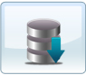

We made a beginning as South India’s leading state-of-the-art Internet Data Center in the year 2002 and was inaugurated by the then President of India Dr. APJ. Abdul Kalam. Our Data Center is located in Pollachi, South India with no historical records of earthquakes or any other natural disasters. Our datacenter is built with highly redundant infrastructure with the objective of meeting Tier III uptime standards.
We offer you the fast, reliable and seamless solution to restart your business immediately after the onslaught of the disaster. When you think the term Disaster Recovery in terms of Business Continuity, even relative events like a street repair crew cutting off power to a building can cause disruptions to your IT Infrastructure, more importantly to your business.
A company that does not have a sound contingency in place can be exposed to prolonged downtime, causing loss of revenue and irreversible damage to its reputation. Disaster recovery services can restore your entire IT Infrastructure into a virtual server environment located at our Data Center. ABTInfo.Net can keep this downtime to an absolute minimum and keep your business functioning as normal.
Our Data Center is strategically located at Pollachi in South India which is not prone to earthquake or any possible natural disasters. Our service offerings cover Hot, Warm and Cold Disaster Recovery solutions depending on the criticality of the business application and industry vertical. We can support your enterprise with the above business continuity solutions that can help you respond quickly to virtually any type of outage, disaster, emergency and disruption. It is more than a backup; it’s a way of integrating Disaster Recovery into your overall IT infrastructure.
The challenges of setting up a complex IT infrastructure and maintaining the same involves huge investments in terms of time and money. The best readily available alternative is to avail co-location services.
Co-location drastically minimizes cap-ex as compared to maintaining your own data center. It enables an organization to rapidly expand their data center footprint on a needed basis without investing upfront on a large set-up. Co-location solution offers availability of high powered networks from multiple service providers ensuring optimal uptime. It allows an organization to concentrate on core applications and deliverables by entrusting data center operations to us, thus minimizing the maintenance cost which in turn increases profitability.
Co-location Solutions are backed by state of the art infrastructure, quality certifications, best business practices, industry standard expertise and a decade of experience. This enables us to provide optimum security, availability and redundant connectivity beyond industry standards. Managed co-location services include advanced e-mail configuring, security solutions, testing & monitoring and system administration services.
Owning and managing IT infrastructure can cost an organization four times the cost of initial purchase and as a result they end up spending more than 75% of their IT budget. Dedicated Hosting is the proven cost-effective alternative solution.
Our Dedicated Hosting solution provides you the simplified plug & plays facility for deployment of complex IT infrastructure needs of any organization. Dedicated Hosting solution provides ownership and full control over the opted infrastructure. An enterprise has the privilege of exclusively owning an entire server including OS and Database which is not shared with anyone and ensures optimum performance. We provide you the availability of high powered networks from multiple providers ensuring optimal uptime. We offer customized and scalable services to take care of all future requirements.
E-mail addresses portray a company’s corporate identity. Corporate mailing solution enhances business communication and collaboration. The volume of mails for every business users grows in a rapid pace and the need for tools to help them manage it more efficiently is a must today. Up-gradation and replacement requirements of an in-house mailing solution involve huge cost.
Our Corporate Mailing solution comes handy with fixed subscription option and provides corporate users to have a complete control over their corporate communication. We provide 3-level anti-spam and content filtering through Ironport solutions. The solution aims at providing dedicated server for an efficient web mail application which can be used by all the employees in your organization.
Corporate mailing solutions delivers collaboration and calendaring features that help users connect, no matter you are working remotely, or in the same location. Our full featured email solution offers secure, scalable communications at the fastest pace.
Remote Infrastructure Management (RIM) facilitates remote monitoring and managing the infrastructure by taking proactive steps across the IT landscape of an organization. RIM drastically reduces the IT infrastructure operations and management cost up to 60%.
We have adopted the best in class industry practices from Infrastructure management solution providers. We assure you a high uptime of the infrastructure. We offer you real-time monitoring and pro-active advisory services. RIM allows you to rationalize IT staffing and improve uptime and system availability.
Cloud computing involves delivering hosted services over the Internet. It refers to computing being done in a remote location, rather than on the desktop or portable device. The goal of cloud computing is to provide easy, scalable access to computing resources and IT services.
Cloud computing services are broadly divided into three categories:
In-house infrastructure are mostly underutilized, often idle 85% of the time, due to over provisioning, inadequate capacity planning, sizing and misconception of scalability requirements.
Our Cloud computing solution renders faster Implementation time. We offer pay-as-you-grow model that enables an organisation to start with a minimal required plan and expand as and when required. It allows anywhere anytime access with high level security and real-time backup to offer maximum up time & availability.
No individual or company is resistant to data failure. Loss of critical data can be devastating. While there are possibilities for recovery of data after a disaster, it is far easier to restore lost data from backup than to attempt to find it from a collapsed infrastructure.
Our back-up services ensures that you have a regular, on-the-fly backups to make sure your files are kept safe off-site but protect yourself against data loss due to damaged equipment, software upgrades, viruses, user mistakes, hackers and theft.
Our advanced security of sensitive data ensures protection during transmission, storage and backup ensuring complete restoration. We deliver back up services with higher level of reliability, productivity and cost containment.
Virtual Private Server (VPS), also referred to as Virtual Dedicated Server (VDS) is a preferred hosting solution for small to medium sized businesses since it delivers control at a level similar to a dedicated server at a price not too far from affordable shared hosting.
VPS represents the next generation of web hosting that revolves around partitioning a single computer to simulate multiple servers. The unique aspect of VPS is that each server has the look and feel of a physical server, equipped with its own operating system and the ability to be managed independently.
Our VPS Solution offers Dedicated Disk Space, Memory and Bandwidth for every organization. We provide Linux/Windows VPS option with root access and self-administration management tools available to install and configure any preferred programs and applications. We also offer free IP address and user-friendly technical support.
Shared hosting tends to be the most affordable way for the average user to get their website or application online. Shared hosting, sometimes called shared services or virtual hosting, is when multiple web sites share the same server, thus reducing the cost for everyone.
Shared hosting is suitable for personal sites, small businesses, and even medium sized businesses if their hosting needs fit within the parameters of a small business.
Our Shared Hosting plans are easy to set-up and manage; hence no technical skill sets are required. Each single server can host multiple web sites and applications. It offers good value proposition to individuals, start-ups and SMEs. It includes control panel for easy administration and unlimited data transfer.